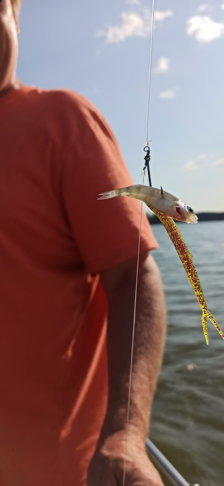
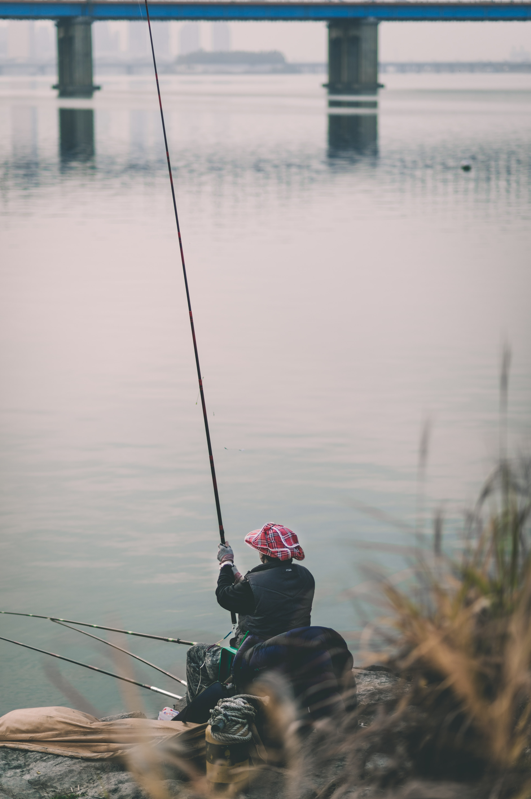
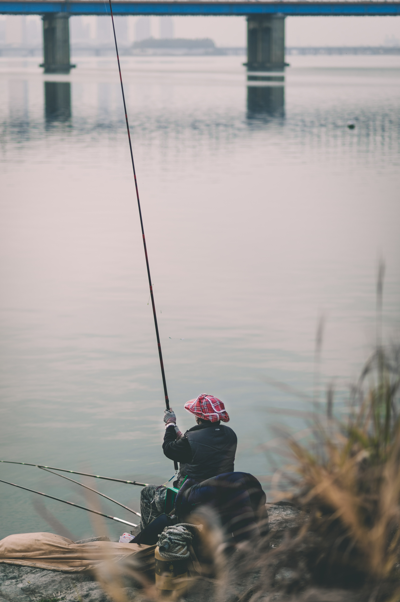
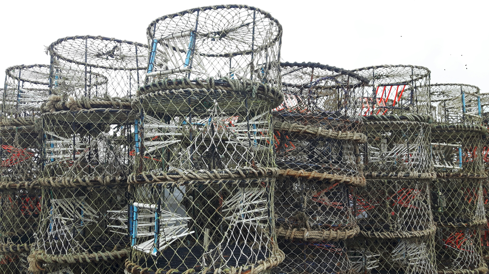

Kalastusmuotoja
Päivitetty: 29.11.2021
Yleinen kuvaus kalastusmuodoista
Kalastusmuotoja on monenlaisia ja suomen vuodenajat vaikuttavat tarjolla oleviin vaihtoehtoihin. Kaikista yksinkertaisin kalastusmuoto on onkikalastus, joka ei vaadi erillistä lupaa, ja sopii aloitteleville kalastajille mainiosti. Ongella voi kalastaa silloin kun vesistöt eivät ole jäätyneet. Talvisin jäiden ollessa tarpeeksi paksut, voi kalastaa pilkillä, joka on ongen tapainen väline, mutta paljon lyhyempi ja siinä on kela.
Heittokalastus
Päivitetty: 29.11.2021

Kuvaus heittokalastuksesta
Suomessa on suotuisat olosuhteet heittokalastukselle, ja tässä lajissa on etuna, että tärpin tuntee nopeasti, jotta voi tehdä vastaiskun. Tällä kalastusmuodolla kalastetaan esimerkiksi ahventa, kuhaa, taimenta, haukea ja harjusta. Heittokalastusta voi tehdä missä vain matalissa vesissä, joita suomessa löytyy paljon.
Perhokalastus
Päivitetty: 29.11.2021

Kuvaus perhokalastuksesta
Perhokalastus on vanha kalastusmuoto, joka sopii mainiosti Suomen vesistöihin, kuten jokiin ja järviin. Syöttinä käytetään keinotekoisia perhoja, jotka muistuttavat hyönteistä ja ovat erittäin kevyitä, jonka takia siima on hieman painavampaa, jotta sitä voi heittää. Perhokalastuksessa kalastaja menee monesti veteen itse seisomaan vettä pitävillä haalareilla. Tavallisimpia saalislajeja tällä kalastusmuodolla ovat pinnalta syövät kalalajit, kuten taimen ja harjus.
Verkkokalastus
Päivitetty: 29.11.2021

Kuvaus verkkokalastuksesta
Verkkokalastuksessa lasketaan vesistöön verkko, jonka tarkoituksena on pyydystää kala verkonsilmään niin, että se jää siihen jumiin. Verkonsilmän koolla tai verkon tyypillä voi määritellä haluamansa saaliin koon. Verkon sijainti merkitään kelluvalla esineellä, jotta sen paikantaa helposti verkkojen nostoa varten. Jos haluaa pyydystää Isoa lahnaa tai haukea, voi käyttää riimuverkkoa, jossa kala ui ensin riimun läpi, jolloin verkko painuu toisen riimun läpi muodostaen pussin, jonne saalis jää kiinni.
Jigikalastus
Päivitetty: 29.11.2021

Kuvaus jigikalastuksesta
Jigikalastuksessa käytetään samoja välineitä kuin heittokalastuksessa, paitsi syötti, joka on silikoninen ja voi muistuttaa kalaa tai toukkaa. Jigikalastus on aktiivinen kalastusmuoto, jossa kalastaja tekee jatkuvasti liikettä, joka herättää saaliin huomion pohjavesissä. Liike muodostuu vavan nykäisystä ja muutamasta kammen kierroksesta, jonka jälkeen annetaan jigin vajota pohjaan ja toistetaan. Tällä kalastusmenetelmällä voi saada esimerkiksi toutaimia, haukia tai lahnoja. Jigikalastus sopii kaikkiin avovesikausiin.
Vetouistelu
Päivitetty: 29.11.2021

Kuvaus vetouistelusta
Vetouistelu on suosittu kalastusmuoto Suomen vesistöillä. Veneellä voi vetää perässään useampaa siimaa kerralla, ja ajankohdasta ja sijainnista riippuen saaliita voivat olla mm. hauki, lohi, taimen ja harjus. Vetouisteluvavat ovat tarkoituksella lyhyitä ja jäykkiä ja niissä on herkkä kärki, että saaliin tarttumisen huomaa helposti. Vetouistelua voi tehdä rennosti muutamalla vavalla, tai käyttää useampaa, jolloin joutuu myös tekemään enemmän työtä.
Pilkintä
Päivitetty: 29.11.2021

Kuvaus Pilkkimisestä
Useimmiten talvella toteutettava kalastusmuoto, johon ei vaadita erillisiä lupia. Pilkintä on helppoa oikealla varustuksella, mutta voi olla myös vaarallista jäiden pettäessä. Pilkkiminen voi olla rentouttava tapa tyhjentää mieli arjen kiireiltä tai se voi myös olla kilpailumuoto, jos kaipaa haasteita.
Onginta
Päivitetty: 29.11.2021
 

Kuvaus onkimisesta
Suomessa suosituin kalastusmuoto, joka ei yleensä vaadi erillistä lupa ja jota voi harjoittaa missä vain vesistön äärellä, esimerkiksi mökkilaiturilla järven rannalla. Onginnassa yleisimpiä saalislajeja on särkikalat, mutta ongella voi myös pyydystää ahvenia ja saada saaliiksi jopa ankeriaita.
Ravustus
Päivitetty: 29.11.2021
Kuvaus ravustuksesta
Ravustuksessa käytetään mertoja, jotka laitetaan vesistöihin ravustuskautena. Merrassa käytetään syöttinä esimerkiksi särkikaloja, mutta muutkin kalalajit kelpaavat syötiksi. Suomessa esiintyy mm. täplärapua, joka viihtyy suojaisissa paikoissa, kuten kaatuneiden puiden vierustalla ja lumpeenlehtien seassa. Paras ravunpyyntisyvyys sijaitsee 3–6 metrin syvyydessä, mutta matalammastakin vedestä voi saada saalista.